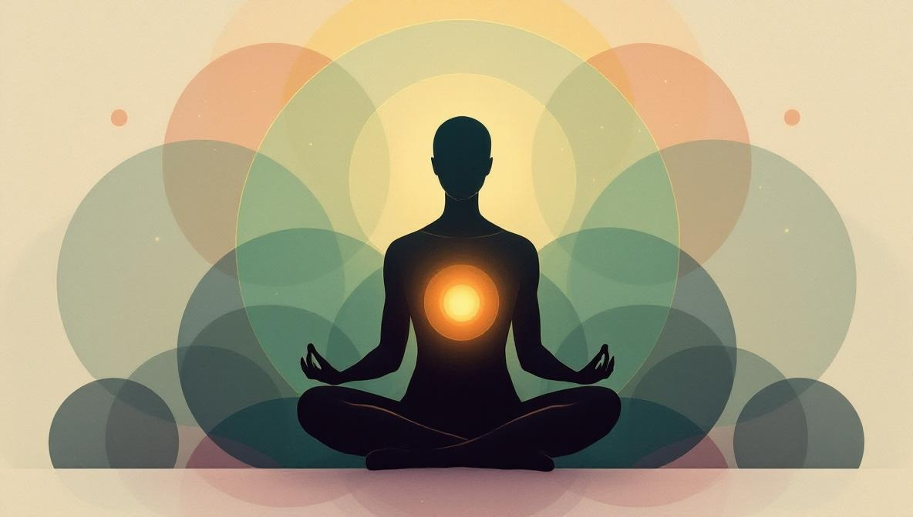
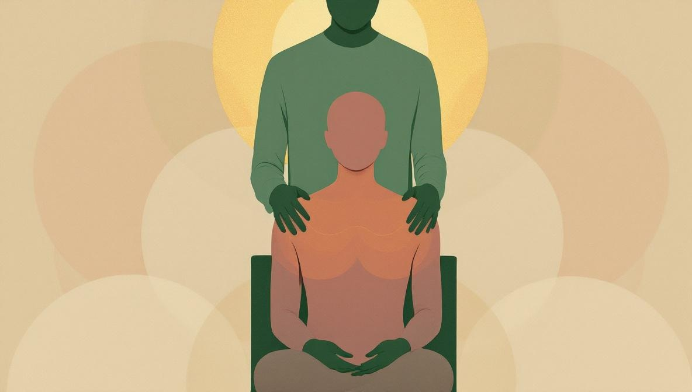

Reiki, in one paragraph
Reiki is a Japanese energy practice developed by Mikao Usui in the early twentieth century. A practitioner places their hands lightly on or just above your body in a series of positions, with the intention of supporting your own capacity to relax and recover. There is no manipulation, no pressure, no diagnosis. A typical session lasts 45 to 60 minutes and is usually received fully clothed, lying on a treatment table. Sessions can also be conducted at a distance via video call. For a fuller introduction, see our guide to what Reiki is and how a session works.
Why people try Reiki when they're anxious
Anxiety is exhausting in a particular way: the body stays braced even when there is no immediate threat, and the mind keeps cycling. People who try Reiki for anxiety usually do it because they're looking for something that lets the nervous system stand down — without taking another medication, without having to talk through anything, without being good at meditation. Reiki delivers on that low-effort piece. You lie down. You don't have to do anything. Someone else holds the structure of the hour.
That accessibility is genuinely useful. Many evidence-based anxiety treatments — cognitive behavioural therapy, exposure work, daily meditation — require active effort, which is precisely what an anxious person often has the least of. Reiki is one of the few interventions that asks nothing in return except that you show up. Whether the mechanism is energy, placebo, the relaxation response, or simply being held in attention by another human being for an hour, the felt result is often: calmer.
What the research actually says
Here is the honest summary, working from the strongest sources downward.
The Cochrane review (2015). Joyce and Herbison's Cochrane systematic review, the gold-standard format for evaluating evidence, looked at randomised controlled trials of Reiki for depression and anxiety. They concluded there was insufficient evidence to determine whether Reiki was useful in this context. That is not the same as saying Reiki doesn't work — it means the trials done so far were too small, too varied, and too methodologically weak to draw a confident conclusion either way.
McManus's 2017 review. A subsequent narrative review by David McManus in the Journal of Evidence-Based Complementary & Alternative Medicine pulled together 13 randomised controlled trials and concluded that Reiki performed better than placebo on most outcomes measured, including anxiety, pain, and depression. The review is more favourable than Cochrane, but it is also a narrative review (lower in the evidence hierarchy than a systematic review with meta-analysis), and many of the included trials remain small.
Bowden, Goddard and Gruzelier (2011). One of the better-designed individual trials. Forty undergraduate students with high anxiety scores were randomised to receive six 30-minute Reiki sessions or no Reiki, with researchers blinded to group allocation. The Reiki group showed significant improvements in mood and stress measures at five weeks, with effects partially maintained at follow-up. Not a definitive result on its own, but consistent with the broader pattern of small positive trials.
The NIH position. The U.S. National Center for Complementary and Integrative Health (NCCIH) describes Reiki as a practice that has not been shown to be effective for any specific health condition, but notes that it appears to be safe and that some people find it helpful for relaxation and stress relief. That is a deliberately careful framing — and it is the framing we recommend you adopt.
What it adds up to. The clinical evidence base is suggestive, not conclusive. Reiki probably engages the same parasympathetic relaxation response as other low-stimulation contemplative practices. People who try it often feel calmer and sleep better in the short term. There is no good evidence that Reiki treats an anxiety disorder in the way that therapy or medication does. Both things can be true.

What a Reiki session for anxiety actually looks like
A first session usually starts with a short conversation. The practitioner asks what brought you in, whether you have any specific symptoms — racing thoughts, chest tightness, sleep trouble — and whether there are any areas of the body you would prefer they didn't place hands near. They may ask about your medical history. Good practitioners ask whether you are working with a therapist or doctor; this is a sign of professionalism, not nosiness.
Then you lie down on a treatment table, fully clothed, often under a light blanket. The lights are usually dim. There may be soft music. The practitioner moves their hands through a series of positions — head, shoulders, chest, abdomen, knees, feet — either lightly resting them on you or holding them just above the body. Most positions last 2 to 5 minutes. The practitioner stays quiet. Many people drift in and out of sleep. Some cry. Some feel nothing in particular.
At the end, there is usually a few minutes of conversation: how you feel now, anything that came up, suggestions for the days following. Most people leave a session feeling something between sleepy and quietly settled. The first night's sleep after a session is often the most striking change.

When Reiki is a reasonable thing to try
Based on the available evidence and our practitioner network's experience, Reiki tends to be most useful in these situations:
- Mild to moderate everyday anxiety — work stress, sleep difficulty, general overwhelm — where the body is wound up and the goal is to discharge that tension.
- Alongside therapy. People often find Reiki a useful supplement to talk therapy, especially in periods when the therapy itself is bringing up a lot of material and the nervous system needs help downshifting between sessions.
- During medical treatment. Several hospitals, including some major academic centres in the United States and the United Kingdom, offer Reiki as an integrative therapy alongside cancer treatment, surgical recovery, and chronic illness care, where the goal is to reduce pre-procedure anxiety and improve comfort.
- When you've tried more demanding practices and bounced off them. If meditation makes your anxiety worse, or if breathwork triggers panic, Reiki's passivity is often more tolerable than self-directed contemplative work.
When Reiki is not the right call
There are situations where reaching for Reiki instead of clinical care can cause real harm. Be honest with yourself about which category you're in.
- Active panic disorder with frequent attacks, agoraphobia, or significant impairment of daily life. The first-line treatments are cognitive behavioural therapy and, where appropriate, medication. Reiki can come later, as a complement.
- PTSD or complex trauma. Trauma-focused therapy (CBT, EMDR, somatic experiencing) is the appropriate first step. A trauma history can also make passive bodywork — including Reiki — destabilising for some people. If you have a trauma history, find a practitioner with explicit trauma-aware training, and tell your therapist before starting.
- Anxiety with active suicidal thoughts. This requires clinical attention — therapist, GP, crisis line, emergency services if needed. Reiki is not the right tool here.
- Anyone selling Reiki as a cure. A practitioner who promises to cure your anxiety, tells you to stop your medication, or claims that Reiki replaces therapy is operating outside both ethical and legal boundaries. Walk away.
How to choose a Reiki practitioner if you want to try it
The quality of a session depends almost entirely on the practitioner. A few things to look for:
- Lineage and level. Reiki has multiple traditions (Usui, Karuna, Holy Fire). Ask who trained the practitioner, and at what level — Reiki Level II is the minimum for most professional practice; Reiki Master is required for teaching.
- How they talk about scope. A good practitioner will distinguish clearly between what Reiki can support (relaxation, sleep, general stress) and what it cannot do (treat or cure a clinical condition). Listen for that distinction.
- Trauma awareness. If you have a trauma history, ask whether they have additional training in trauma-aware bodywork. Many do; the ones who don't will usually say so.
- Clear pricing and structure. A first session of 60 to 75 minutes typically costs €60 to €120 depending on the city. Practitioners who pressure you into expensive multi-session packages before you've even tried one session are a soft red flag.
Looking for a verified Reiki practitioner?
Holistic Unity connects you with Reiki practitioners whose training, lineage and licences we have verified. Browse profiles, read what they say about scope and ethics, and book online with no platform middleman taking a cut.
Find a Reiki PractitionerSources and references
- Joyce J, Herbison GP. “Reiki for depression and anxiety.” Cochrane Database of Systematic Reviews 2015, Issue 4. Art. No.: CD006833. Indexed on PubMed (PMID 25835541).
- McManus DE. “Reiki Is Better Than Placebo and Has Broad Potential as a Complementary Health Therapy.” Journal of Evidence-Based Complementary & Alternative Medicine. 2017;22(4):1051-1057. Indexed on PubMed (PMID 28874060).
- Bowden D, Goddard L, Gruzelier J. “A randomised controlled single-blind trial of the efficacy of Reiki at benefitting mood and well-being.” Evidence-Based Complementary and Alternative Medicine. 2011;2011:381862. Indexed on PubMed (PMID 20976080).
- U.S. National Center for Complementary and Integrative Health (NCCIH). “Reiki: What You Need to Know.” Available at nccih.nih.gov/health/reiki-what-you-need-to-know.
- Benson H. The Relaxation Response. Original research describing the parasympathetic relaxation response. Benson Henry Institute for Mind Body Medicine, Massachusetts General Hospital — bensonhenryinstitute.org.
- International Center for Reiki Training (ICRT). Reference body for Usui/Holy Fire lineage practitioner standards — reiki.org.
Frequently asked
Does Reiki actually work for anxiety?
The evidence is modest and mixed. The 2015 Cochrane review concluded there was insufficient evidence to determine whether Reiki helps with anxiety or depression. Several smaller randomised trials, including Bowden et al. (2011), have reported reductions in stress and improvements in mood. Most researchers agree that the relaxation response triggered by a session — slowed breathing, reduced muscle tension, parasympathetic activation — is real and physiologically meaningful, even if the mechanism is debated. Reiki may be a helpful complement to clinical treatment for mild to moderate anxiety; it is not a replacement for evidence-based care for an anxiety disorder.
Is Reiki safe for someone with an anxiety disorder?
Reiki is generally considered very low risk. The U.S. National Center for Complementary and Integrative Health notes that Reiki appears to be safe and free from significant side effects when practised as a complementary therapy. The main risk is not the practice itself but the possibility that someone with a serious mental health condition delays or replaces clinical treatment. If you have a diagnosed anxiety disorder, treat Reiki as something you add alongside therapy and medical care, not instead of them. Tell your doctor and your Reiki practitioner about each other.
How many Reiki sessions do I need to feel a difference?
Many people report feeling calmer after a single session, though this is typically short-lived. For sustained effects on stress and mood, most practitioners suggest a course of 4 to 6 weekly sessions, then re-evaluating. The Bowden et al. (2011) study used six 30-minute sessions over a few weeks and observed measurable improvements. If you have not noticed any meaningful change after 4 to 6 sessions, it is reasonable to stop or try a different approach.
Can distance Reiki help with anxiety?
Distance Reiki — sessions conducted over video call or by appointment without physical presence — is a common practice. The clinical evidence specifically for distance Reiki is thinner than for in-person sessions, but many people find it works well for them. The benefits people report (deep relaxation, reduced rumination, better sleep) are mostly consistent across formats. If practical or geographic constraints mean distance is your only option, it is a reasonable choice; otherwise, in-person sessions are the more studied format. For more on the format, see our guide to distance Reiki.
How is Reiki different from meditation or breathwork for anxiety?
All three engage the relaxation response and can lower acute stress. The difference is in what you do. Meditation and breathwork are skills you practise yourself, daily, and the benefits build over time. Reiki is a session you receive from a practitioner; the work is theirs, you simply rest. For people who find self-directed practices difficult — especially in a state of high anxiety — Reiki can be an easier entry point. For long-term anxiety management, building a daily meditation or breathwork practice usually has more durable effects.